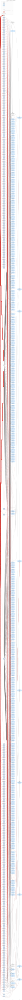
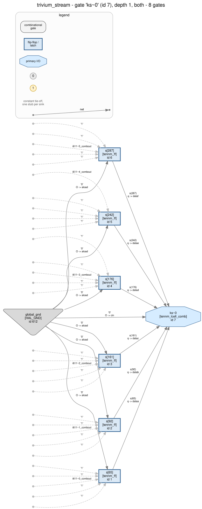

Walkthrough 13 — a Trivium keystream generator: finding three coupled nonlinear feedback shift registers in a netlist that, read the obvious way, contains no shift register at all.
none-detected.
Walkthrough 11 is the other prerequisite, for one habit: when a structural test finds nothing in a vendor export, ask what the synthesiser packed on top of the thing you were looking for.
The design under the netlist is Trivium (De Cannière and
Preneel, ISC 2006; eSTREAM portfolio, ISO/IEC 29192-3): an 80-bit key, an 80-bit
IV, 288 bits of state, one keystream bit per clock cycle, and a
1152-cycle warm-up before the first usable bit. The full specification this
walkthrough is checked against is in spec.md,
which was written before the RTL was synthesised. In the cipher's own 1-based
numbering, one cycle is:
t1 = s66 + s93 s1..s93 <- (t3, s1..s92) 93 stages
t2 = s162 + s177 s94..s177 <- (t1, s94..s176) 84 stages
t3 = s243 + s288 s178..s288 <- (t2, s178..s287) 111 stages
z = t1 + t2 + t3 <- the keystream bit
t1 = t1 + s91*s92 + s171 t2 = t2 + s175*s176 + s264
t3 = t3 + s286*s287 + s69Read that against walkthrough 05 and three differences matter:
s91*s92 is an AND of
two adjacent stages. That single degree-2 term means the next-state map is not
linear, so there is no feedback polynomial, no characteristic polynomial and no
period to compute.z is
the XOR of the six stages the feedbacks read before their AND terms are
added, and it touches none of the six bits that go into an AND.Same flow as every walkthrough in this series: quartus_syn, then
quartus_eda for a post-synthesis Verilog export, and nothing after
that — no fitter, no I/O buffers, no PLL. The export is checked against the
validated primitive coverage before anything else is done with it:
$ python tools/hal_agilex --strict inventory "$EX/trivium_stream.vo"
All 611 instances are tennm_ff or tennm_lcell_comb, each in a configuration
this package models and has validated against the vendor export.
tennm_ff 301
tennm_lcell_comb 310301 flip-flops for 288 state bits plus an 11-bit warm-up counter and two flags; 310 ALMs, which is one per state bit plus twenty-two. Clean — but it took two QSF assignments and one RTL attribute to be clean, and all three are worth stating because each is a place where the *tool's* limits shaped the design:
| decision | without it |
|---|---|
AUTO_SHIFT_REGISTER_RECOGNITION OFF |
93-, 84- and 111-stage shift registers are exactly what Quartus retargets onto a memory block. A memory block is outside the validated coverage — and it would also delete the entire structure this walkthrough is about. |
ALLOW_SYNCH_CTRL_USAGE OFF |
the load select lands on the flip-flop's sload pin, which is a
real tennm_ff port outside the configuration
tools/hal_agilex validated, so the export is reported
unsupported. Same assignment, same reason, as walkthroughs 06 and
11. |
/* synthesis keep */ on the three feedback wires |
load ? K1 : t3 flattens into one cone of seven
inputs, and seven inputs needs the ALM's fracturable seven/eight-input mode
(extended_lut "on") — also outside coverage. Kept, it is a
five-input feedback cell feeding a three-input multiplexer, both inside. |
keep.Census, boundary, register banks — the standard opening moves. Nothing here knows what the design is.
$ python examples/agilex3_walkthroughs/13_trivium_stream/analysis.py stats
611 instances: 301 tennm_ff, 310 tennm_lcell_comb
in : clk, rst_n, start, key[79:0], iv[79:0]
out: ks, ks_valid, busy
$ ... analysis.py registers
q vectors : s[287:0], lo[5:0], hi[4:0], warm, done
groups : 296 registers on (clk, rst_n, ena=1)
5 registers on (clk, rst_n, ena=i638~1_combout)Read what that does and does not give you. One 288-bit register and two small ones is a very large state for a design with three output bits — a 288-bit datapath that never leaves the chip is either a cipher, a scrambler or a very strange counter. The enable grouping, which in walkthroughs 02 and 06 is the main structural lever, says almost nothing here: 296 of 301 registers are in one bucket. The five that are not turn out to be the high half of a counter (section 5, step 7), and that is a synthesis decision, not design intent.
s[0..287], lo,
hi, warm, done — as walkthroughs 11 and 12
do, because the point being taught is structural recovery, not de-anonymisation.
Walkthroughs 02, 03 and 10 ship blinded netlists for that. Nothing in
analysis.py reads a name for meaning: the segment lengths, the taps,
the load pattern and the warm-up length are all derived from wiring and cone
algebra, and a name only ever gets used to print a result.Nodes are gates, edges are nets — one edge per
driver → sink pair. The graph is not acyclic: the cipher state feeds
itself every cycle. But every cycle passes through a register, so cutting every
edge that lands on a flip-flop pin leaves a directed acyclic graph — the
combinational core — which can be topologically levelled, level 0 on the left.
hal_viz dag runs Kahn's algorithm and draws each level as a
column.
$ python tools/hal_viz dag "$EX/netlist.hal.v" -g "$GL" --const-hub --max-gates 700 \
-o "$EX/images/dag.svg" --html
3 topological levels, 908 edges
cut at a register. The standalone page with a legend and these counts is
images/dag.html; the DOT source is
images/dag.dot.Three columns, and the architecture is readable straight off their sizes:
ks, the two terminal-count tests and the
six-cell lo counter.hi counter with
its enable, and the two flag cells.At 613 gates the unlevelled whole-netlist drawing is not a diagram.
dot did not finish it in ten minutes — the graph is cyclic, so it
cannot be layered and the layout falls back on general placement — and
--engine sfdp returns a hairball you cannot read a gate name off.
This walkthrough therefore scopes its gate
graph to one stage's neighbourhood, the way walkthrough 12 does, and leaves
the whole-netlist view to the levelled DAG. That the same 613 nodes level in
seconds is the strongest argument for the levelled view in the series so far.
Constants are one shared hub, not one
0/1 stub per consuming pin as in walkthroughs 01–10.
The constant fan-out here is 4377 consuming pins — 301 flip-flops with five tied
control pins each, plus every ALM's unused data inputs. Drop
--const-hub to render the other spelling; the level count is
identical and the edge count is not, because the hub draws a flip-flop's tied
control pins once instead of five times.
A levelled DAG shows where the logic is; it does not show what runs through
it. hal_agilex trace records every net of a bounded, seeded window
of the same simulator the behaviour check uses, and hal_viz clock_step
paints that trace onto the drawing above:
$ python tools/hal_agilex trace "$EX/trivium_stream.vo" \
--reference "$EX/recovered_reference.py" --cycles 32 --skip 1140 \
--hold start=1 --hold key=0 --hold iv=0 \
-o "$EX/artifacts/dag_trace.json"
$ python tools/hal_viz clock_step "$EX/images/dag.svg" \
--trace "$EX/artifacts/dag_trace.json" \
-o "$EX/images/dag_interactive.html"images/dag_interactive.html
is one self-contained page: prev/next, a scrubber, play/pause, nets coloured by
value. The window is the end of a warm-up rather than its start —
--skip 1140 walks the same run forward without recording, so these
32 frames are a window of one 1152-step warm-up, not a second short run. Frame
1154 is the moment the counter reaches 63/17: busy falls,
ks_valid rises, and ks carries z1 of the
published all-zero-key vector. One frame later start — held high
throughout — is finally accepted again and the whole state reloads, which is the
"start is ignored while busy" rule happening in front of you.
Every step below reads only the export. None of them looks at
design.v, spec.md or the reference models, and each is
one function in analysis.py whose output
check.py re-asserts.
clk reaches every flip-flop's clock pin and nothing else;
rst_n reaches every clrn and nothing else. That is one
clock domain and one asynchronous, active-low clear, read off the
primitive rather than guessed. key and iv are
80 bits each and reach only flip-flop data cones — they are captured, never
observed. start reaches every one of the 288 state
stages, which already says it is a control input and not data.
A shift chain is the cheapest structure in the book: register i's data input is register i−1's output, through buffers and inverters only. Run that test here and the answer is zero.
$ ... analysis.py chains
registers : 301
plain_shift_links_without_holding_anything : 0Not "a few", not "some": not one register in a design that is three shift registers. The reason is the same shape walkthrough 11 hit with its XOR layer. Every stage's next state is
s[i] <= load ? init[i] : s[i-1]which is a multiplexer, and a multiplexer is not "exactly one register's output". A parallel key/IV load — which every keyed generator has — hides all 288 links at once.
The fix is walkthrough 11's fix, applied to links instead of XORs:
hold one input at one constant and look again. The net is not
guessed. hal_crypto.shiftreg ranks the external nets by how many
next-state functions read them nonlinearly — a load select is read by a
whole bank, a data bit by one register — and tries the top candidates at both
values:
mode_candidates : ['start']
... with start held at 0:
chains : 3
total_stages : 288start is low" are different statements. Every
structure found this way carries
mode: {"net": "start", "value": 0}, and every finding built from it
repeats the condition in its summary. Holding an input is also strictly limited:
one net, and the result is kept only if it is a feedback register. A
bank that merely becomes an open chain once its load select is held is a loadable
register bank, which is what most register banks are, and reporting it would turn
every design into a finding.With start held, the chain walk returns three chains and they
account for all 288 stages:
| chain | head → tail | stages | own taps | feedback reads chain |
|---|---|---|---|---|
| 0 | s[0] → s[92] | 93 | 1 | 1 |
| 1 | s[177] → s[287] | 111 | 1 | 2 |
| 2 | s[93] → s[176] | 84 | 1 | 0 |
Each head's feedback reads one stage of its own chain and four stages of exactly one other, and the "other" relation is a 3-cycle: 0→1→2→0. That is the defining shape of a modern hardware stream cipher — Trivium, Grain, Bivium are all coupled registers — and it is why the obvious reading fails a second time. A chain whose head reads a register that is not one of its own stages looks open, and an open chain is not evidence of anything. The pass now finds every chain before classifying any of them, so a foreign tap can be resolved against a sibling instead of ending the analysis:
kind : nlfsr
coupled : true
coupled_chains : [1]
feedback_anf : s0[68] ^ s1[110] ^ s1[65] ^ (s1[108] & s1[109])s[65] means two different flip-flops once two registers are in play,
so a coupled feedback is written s<chain>[<stage>]. A
self-contained chain — walkthrough 05's, or the nlfsr16 fixture —
keeps the plain s[i] spelling, so nothing about the existing output
changed.polynomial field is null and its
polynomial_convention field says why — a missing polynomial here is
a result, not a failure.Each head's cone is five register bits wide, so it is enumerated exhaustively — 32 rows — and the algebraic normal form that comes back is the feedback, not a fit. Translated into the cipher's 1-based numbering:
$ ... analysis.py feedback
head s[0] (93 stages) : s243 + s288 + s69 + s286 * s287
head s[177] (111 stages) : s162 + s177 + s264 + s175 * s176
head s[93] (84 stages) : s171 + s66 + s93 + s91 * s92
degrees : [2]
and_terms : 3Three degree-2 terms, one per segment, and every one of them is a product of two adjacent stages. That is the whole nonlinearity of the cipher: 288 state bits, 310 cells, and three AND operations.
t3 is a single
tennm_lcell_comb with five state bits on
dataa..datae — the product lives in that cell's 64-bit
lut_mask, mixed in with the three XORs it shares the cone with, and
it is recoverable only by evaluating the function, never by looking at gate
types. Same lesson as walkthrough 11's rotations and walkthrough 12's pLayer,
from the other direction: an operation that costs less than a cell does
not get a cell.
kind: lfsr; with self-contained chains it would
also report a polynomial and a period, exactly as it does for walkthrough 05's
x^16 + x^15 + x^13 + x^4 + 1, period 65535. Section 7 runs that
counterfactual as a negative control and the netlist rejects it.
Linear versus nonlinear is not a label on the design; it is a property of
a truth table you can compute.One cell drives ks. Its cone is six register bits and the
function is a pure XOR of all six:
$ ... analysis.py output
cell_inputs : s[65] s[92] s[161] s[176] s[242] s[287]
is_pure_xor : true
sources_spec : 66, 93, 162, 177, 243, 288
also_a_feedback_tap : all six
reads_any_and_term_input : noneThose six are precisely the linear taps the three feedbacks share — two per segment — and not one of the six bits that feed an AND appears here. So the output function is the linear part of the feedback with the nonlinearity left out. That is a real design statement recovered from two cone evaluations, and it is the sentence a report should contain instead of "it looks like Trivium".

Step 2 held start at 0 to see the shift. Hold the
complementary assignment and the same 288 cones give the initial state.
The assignment is found, not assumed: for one ordinary stage the pass enumerates
every assignment of the cone's control inputs and keeps the one under which the
next state stops depending on the stage before it.
$ ... analysis.py load
load_mode : {"start": 1, "warm~q": 0}
key -> s[0..79] (identity, offset 0)
iv -> s[93..172] (identity, offset 93)
ones at s[285], s[286], s[287]
zeros: 13 bits at s[80..92], 112 bits at s[173..284]In the cipher's numbering that is K1..K80 into
s1..s80, IV1..IV80 into s94..s173, three
ones at the very top of the third segment and zeros everywhere else — the
published loading rule, recovered from 288 truth tables. The three ones matter
structurally as well as historically: they are the only asymmetry in an otherwise
all-zero tail, and they are what stops the all-zero state from being a fixed
point.
load_mode came back with two entries, not one: start = 1
and warm~q = 0. Nothing asked for that. It is the enumeration
reporting that the load is gated by a register as well as by a port — which is
the "start is ignored while busy" rule, found before anything was
simulated.A cell whose cone reads nothing but the bits of one register vector and is true for exactly one of them is a terminal-count test, and the value it fires on plus one is that counter's modulus. There are two:
$ ... analysis.py warmup
lo_last : counter lo, 6 bits, fires on 63 -> modulus 64
hi_last : counter hi, 5 bits, fires on 17 -> modulus 18
warmup_steps : 1152
state_bits : 288
steps_per_state_bit : 464 × 18 = 1152, and 1152 / 288 = 4. The second number is the interesting one: a warm-up that is an exact multiple of the state size is a designer saying "run until every bit has been through the feedback four times", and 4 × 288 is the number the Trivium specification gives.
count == 1151 is an eleven-input
function. An ALM inside the validated primitive coverage reads six. So the RTL
counts 64 × 18 — a six-input test and a five-input one — and recovering the
warm-up length means recovering two moduli and multiplying them. That is
also why five of the 301 registers sit in their own enable group: Quartus gave
the hi counter a clock enable instead of a multiplexer, which is a
packing decision, not design intent, and step 2's grouping could not have known
that.Steps 2–7 are structure. This step never reads their output: it drives the exported netlist as a black box with vectors from the eSTREAM Trivium test-vector file and looks at what comes out.
$ ... analysis.py keystream
Set 1, #0 key 80000000000000000000 iv 0...0 -> 38EB86FF730D7A9C (published: same)
Set 2, #0 key 00000000000000000000 iv 0...0 -> FBE0BF265859051B (published: same)
Set 3, #0 key 00010203040506070809 iv 0...0 -> D2A8740BBA6FD906 (published: same)
cycles_from_accepted_start_to_valid : 1153
warmup_steps : 11521153 = one load cycle plus the 1152 steps step 7 predicted from two comparator constants. Two independent methods agreeing is the evidence; either alone is a hypothesis.
K1..K80 and z1, z2, ... takes a convention that has to
be stated rather than assumed. z1 is the least significant
bit of the first keystream byte; K1 is the most significant
bit of the last printed key byte. spec.md
states both and analysis.port_word is the whole of it. The vector the
walkthrough leans on is Set 2 — key and IV both zero — precisely because for it
neither convention can matter; Sets 1 and 3 are what pin the key convention down.
A test vector that reproduces is evidence about the netlist and about
your byte order, and the two are worth separating.hal_crypto identify runs six structural passes and aggregates
them into a family verdict and a classical/PQC verdict. Run against this export
when the walkthrough was first built, it said:
Structural family: none-detected
S-box extraction: 0 bijective non-affine substitution(s) ...
shift registers: 0 chain(s) of at least 4 stages, 0 of them closed by a
feedback function
ARX: no carry-chain adder of at least 4 bits; no fixed rotation ...
Classical / PQC style: undeterminedZero chains in a design that is three shift registers. That is a real gap in
the tool, not a problem with the example, and it is two gaps rather than one:
the load multiplexer of step 2 and the coupling of step 3. Both were fixed
alongside this walkthrough — the operating-mode cofactor and the
found-before-classified restructure described in those steps — with two new
synthesized fixtures, lfsr16_loadable and coupled_nlfsr,
that make each case on its own so the fix does not depend on this example. Every
pre-existing fixture verdict and every other walkthrough's verdict is
byte-identical before and after. With the fix:
$ python tools/hal_crypto identify "$EX/trivium_stream.vo"
Structural family: lfsr-stream (confidence tier: high)
a 93-stage NLFSR with feedback ANF s0[68] ^ s1[110] ^ s1[65] ^ (s1[108] & s1[109])
(coupled to chain(s) 1), while start = 0
a 111-stage NLFSR with feedback ANF s1[86] ^ s2[68] ^ s2[83] ^ (s2[81] & s2[82])
(coupled to chain(s) 2), while start = 0
a 84-stage NLFSR with feedback ANF s0[65] ^ s0[92] ^ s2[77] ^ (s0[90] & s0[91])
(coupled to chain(s) 0), while start = 0
Classical / PQC style: classical-style| it says | it does not say |
|---|---|
lfsr-stream: an autonomous feedback shift register of at
least four stages is present |
that the design is Trivium. Nothing in the six passes contains the word. The
match to the published feedback functions in step 4 is a statement about three
equations, made by a human reading analysis.py's output against
literature. |
classical-style: the structures found are the ones classical
symmetric primitives are built from, and no lattice/ring arithmetic was found |
that the design is not post-quantum. A hash-based or code-based scheme
contains neither NTTs nor S-boxes and would come back
none-detected. That caveat travels in the finding text. |
three nlfsr structures, feedback degree 2 |
a period, a polynomial, or a claim about the sequence. The pass computes a period only for a linear, self-contained register; here it reports neither, and the absence is the finding. |
| 05_lfsr_prng | 13_trivium_stream | |
|---|---|---|
| family | lfsr-stream | lfsr-stream |
| kind | lfsr | nlfsr × 3 |
| stages | 16 | 93 + 84 + 111 |
| feedback | s[12]^s[14]^s[15]^s[3] | s0[68]^s1[110]^s1[65]^(s1[108]&s1[109]) |
| degree | 1 | 2 |
| polynomial | x^16+x^15+x^13+x^4+1 | none — and none exists |
| period | 65535, maximal | not computed, not computable this way |
| coupled | no | yes, in a 3-ring |
| visible without holding a net | yes | no |
Same family, same pass, same verdict word — and an entirely different object. The family verdict is where the analysis starts, not where it ends.
The --with-hal tier loads netlist.hal.v through
hal_py and asks the graph_algorithm plugin for
strongly connected components — a second reader, a second gate model, a third
algorithm. It returns one component containing all 288 state
registers, not three.
Both answers are right. Everything in a ring is mutually reachable, so the SCC decomposition cannot see a boundary that is not there: as a state machine this is one 288-bit object and no segment has an independent existence. The 93/84/111 split is a statement about the shift links, which is a different question. Walkthrough 11's SCCs split its key schedule from its data path because that coupling is one-way; here the coupling is a cycle, and the same tool correctly declines to split anything. Disagreement between two structural methods is information about the design, not a bug in one of them.
recovered.v is the design written back
out from steps 2–8 and nothing else; every constant in it carries a comment
naming the step that produced it.
recovered_reference.py is the
same model in Python, and it is what the netlist is checked against:
$ python tools/hal_agilex behavior "$EX/trivium_stream.vo" \
--reference "$EX/recovered_reference.py" --cycles 3600
hal_agilex/behavior/reference-equivalence : proven_bounded (3600 cycles)A green bounded check means nothing on its own, so two deliberately wrong copies of the recovered model are run the same way and must be caught:
| control | what it changes | result |
|---|---|---|
T3_TAPS = (242, 287, 69) |
one feedback tap moved one stage: s69 becomes
s70 |
bounded_counterexample, first mismatch at cycle
71 |
NONLINEAR = 0 |
every & in the three feedbacks becomes ^ — the
cipher becomes a coupled linear feedback register |
bounded_counterexample, first mismatch at cycle
71 |
Cycle 71, not cycle 1, and the number is the point. A wrong bit enters at a
segment head and has to shift 65 stages before the output function reads it —
the first six cycles of a wrong Trivium are indistinguishable from a right one on
the only bit the design exposes. check.py asserts both that the
controls are caught and that they are not caught immediately, because a
negative control whose divergence latency you have not measured is a negative
control you do not understand.
check.py re-runs both controls live, and the obvious 200-cycle bound
made both of them pass clean. Not because the model was right: because
hal_agilex behavior asserts its asynchronous clear at
cycles/3, which for a 200-cycle run is cycle 66 — five cycles before
the divergence, wiping the state that carried it. The controls run for 400 cycles
now. This is walkthrough 08's lesson arriving from a new direction: a bounded
check can miss a wrong answer because of where the stimulus went, not
only because of how long it ran, and the only way to find that out is to run a
control you know is wrong.start pseudo-randomly, and a warm-up is
uninterruptible once begun, so it contains six accepted loads and three complete
1152-step warm-ups — but ks_valid is high for only six of
3600 cycles, because a random start reloads the core the
moment it goes idle. Almost the entire bound is spent checking warm-up steps.
Shorter runs never complete a warm-up at all. The keystream phase is exercised by
step 8's published-vector runs instead, and saying which check covers which part
of the state space is more useful than quoting a bigger cycle count.start ignored while busy" rule, from the load cofactor.key and iv are two 80-bit ports loaded into two
different places; that one is secret and the other is not is a protocol fact with
no gate to live in.hi's clock enable was intended. It is a
Quartus packing choice. The recovered RTL writes it as an if and
re-synthesises to the same thing, but the export cannot tell you which spelling
was written.lfsr or
nlfsr with coupled: false — and, if you also drop the
AND, a polynomial and a period.keep from the three feedback wires
and see the export fail inventory --strict on
extended_lut "on". Walkthrough 12 ships the analogous counterfactual
as a committed variant; here it is a coverage failure rather than a quieter
one.analysis.py reads a name for meaning, so all of it should still
work — which is the claim, and worth testing rather than trusting.Synthesis, on Windows with Quartus Prime Pro 26.1:
mkdir scratch && cd scratch
cp ../design.v ../quartus/trivium_stream.qpf ../quartus/trivium_stream.qsf \
../quartus/build.tcl .
quartus_sh -t build.tcl
quartus_syn trivium_stream -c trivium_stream
quartus_eda --simulation --format=verilog --tool=questasim \
--output_directory=simulation trivium_stream -c trivium_streamEverything else, on Linux with a built HAL and Graphviz — every command this guide shows, in the order it shows them:
export HAL_BASE_PATH=<build> HAL_PY_PATH=<build>/lib PYTHONPATH=<build>/lib
sh examples/agilex3_walkthroughs/13_trivium_stream/run_analysis.shAnd the check that every number above is still true:
python3 examples/agilex3_walkthroughs/13_trivium_stream/check.py # no HAL needed
python3 examples/agilex3_walkthroughs/13_trivium_stream/check.py --with-hal # + the hal_py tierThe first tier needs nothing but a Python 3 interpreter, because
tools/hal_agilex and tools/hal_crypto are HAL-free by
design; the second adds the hal_py load and the SCC decomposition of
section 6. Both are run in CI by
tests/headless_smoke/run_walkthrough_checks.sh.
Every number on this page is produced by
analysis.py or by a
tools/hal_* command shown beside it, and re-asserted by
check.py. If a tool change makes one of them
false, that check fails.
{kind=link}
{kind=link}